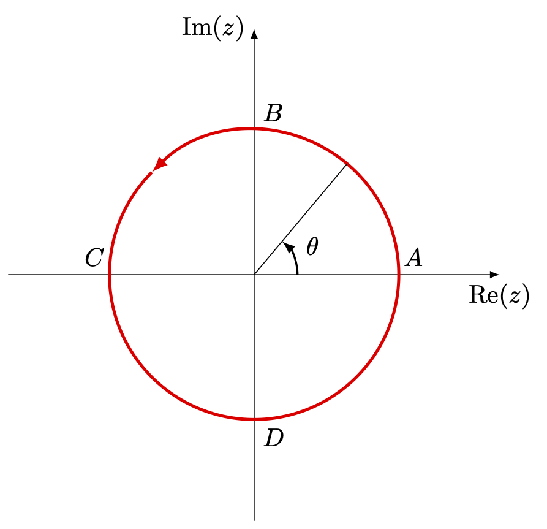
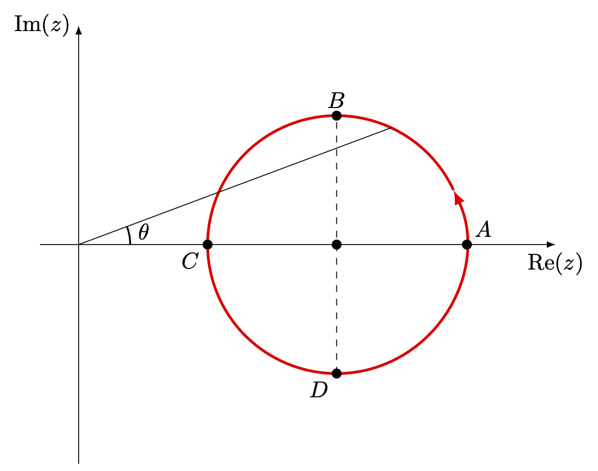
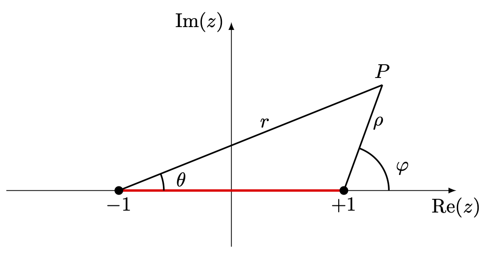
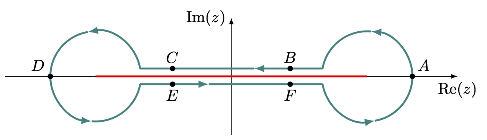
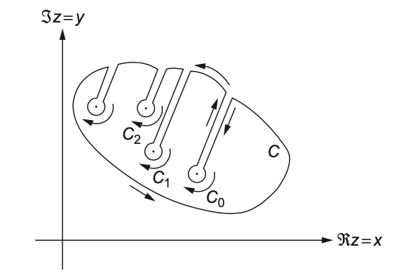
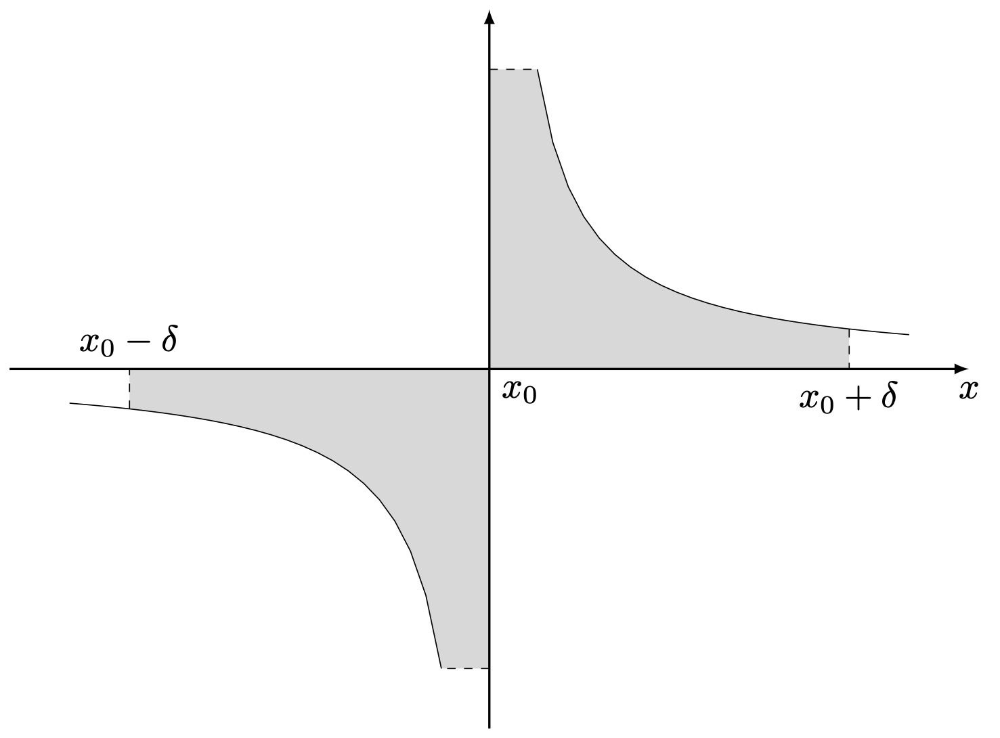
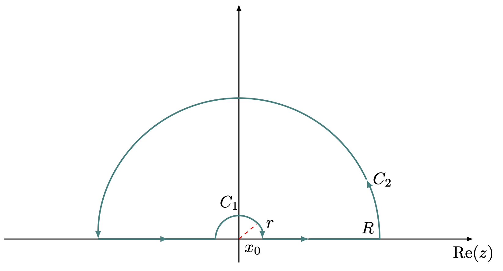
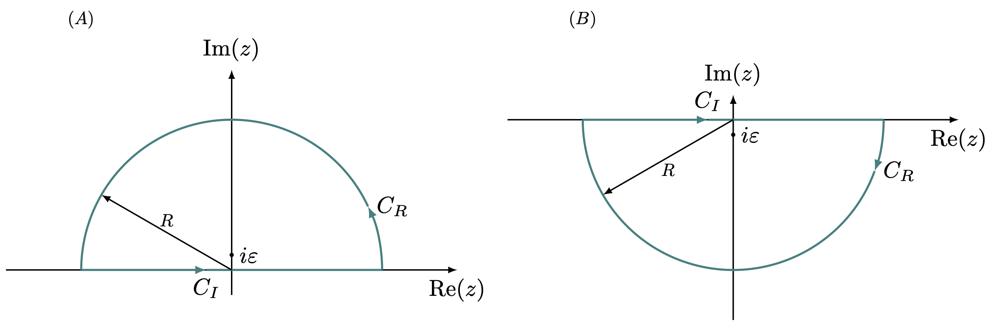

13 특이점과 유수 정리
% %
%\[ \DeclarePairedDelimiters{\set}{\{}{\}} \DeclareMathOperator*{\argmax}{argmax} \]
13.1 특이점과 분지점
13.1.1 특이점
\(e^{1/z}\) 는 본질적 특이점을 가진 대적인 함수이다. \(0\) 부근에서 다음과 같기 때문이다.
\[ e^{1/z} = \sum_{k=0}^\infty\dfrac{1}{k!}\dfrac{1}{z^k} \]
본질적 특이점은 매우 다루기 까다롭다. 많은 경우 본질적 특이점의 작은 근방에서 함수가 심하게 요동처서 거의 모든 \(\mathbb{C}\) 의 값을 가질 수 있다. 따라서 여기서 다루는 대부분의 특이점은 극점이다.
13.1.2 분지점(Branch point)
분지점(Branch point) 는 다가함수(multivalued function) 을 다룰 때 매우 중요하다.
예제 13.1

단위원을 반시계방향으로 회전하는 경로에서의 \(f(z) = z^{1/2}\) 를 생각하자. \(z=re^{i\theta}\) 라고 하면 \(z^{1/2}=r^{1/2}e^{i\theta/2}\) 일 수도 있고 \(z^{1/2} = r^{1/2}e^{i(\theta/2 + \pi)}\) 일 수도 있다. 각각의 경우 \(f(1)=1,\,-1\) 이다.
위의 그림과 같이 단위원상에 \(A,\,B,\,C,\,D\) 점을 잡자. \(A(z=1)\) 로부터 경로가 시작하며 \(f(1) = 1\) 이 라고 할 경우
\[ f(B) = \dfrac{1+i}{\sqrt{2}},\, f(C) = i,\, f(D) = \dfrac{-1+i}{\sqrt{2}} \]
이다. \(\theta\) 가 증가하는 방향으로 생각하며 \(C\) 에 \(\theta = -\pi\) 와 같은 값을 넣을 수 없다. \(ABCDA\) 순으로 경로를 진행할 때 마지막의 \(A\) 에서는 \(\theta =0\) 이 아닌 \(\theta =2 \pi\) 가 되어야 한다. 최종의 \(A\) 를 \(A'\) 이라고 써서 구분하면 \(f(A') = -1 \ne f(A)\) 이다. 이제 \(\theta\) 를 한바퀴 이상 더 진행하면 그리고 이 경우 \(B,\,C,\,D,\,A\) 를 \(B',\,C',\,D',\,A''\) 이라고 쓴다면
\[ f(B') = \dfrac{-1-i}{\sqrt{2}},\, f(C') = -i,\, f(D') = \dfrac{1-i}{\sqrt{2}},\, f(A'')= 1 \]
이다.
예제 13.2

\(z=2\) 을 중심으로 반지름이 1 인 원 경로를 생각하자(그림 13.2). \(A\) 점, 즉 \(z=3\) 에 대해 \(f(3) = \pm \sqrt{3}\) 값을 가질 수 있다. \(z=2+e^{i\theta}\) 의 경로를 생각하면 \(\text{Re}(z) > 0\) 이며 따라서 \(ABCDA\) 순으로 순회하여 다시 \(A'=A\) 로 갔을 때의 값은 역시 \(\sqrt{3}\) 임을 알 수 있다. 즉 예제 13.1 의 경우와 달리 closed loop 를 순회하고 다시 돌아왔을 때 그 함수값이 바뀌지 않는다.
예제 13.1 와 예제 13.2 의 차이는 경로 내부에 특이점 \(z\) 를 포함하는지 여부이다. 여기서 \(z=0\) 이 왜 특별한가? \(f(z) = z^{1/2}\) 는 \(z=0\) 에서 미분이 정의되지 않은 특이점이며 이 특이점 주변의 경로에 따라 함수값을 계산할 경우 여려 값을 가질 수 있다. 이런 점을 branch point 라고 하며, branch point 의 계수(order)는 함수가 원래의 값으로 돌아오기 위해 거쳐야 하는 경로의 수를 말한다. 예제 13.1 의 경우 \(z=0\) 은 \(f(z) = z^{1/2}\) 에 대해 계수가 \(2\) 인 branch point 이다.
다가 함수를 단일값 함수로 제한하기 위해서 해야 할 일은 branch point 를 포함하지 않는 경로를 잡아서 함수값을 정하는 것이다. 보통 branch line 혹은 branch cut 이라고 부르는 선을 긋는데 branch point 에서 시작하여 무한대 까지 가거나 아니면 다른 유한한 계수의 branch point 까지 가는 직선을 그으며 이 직선을 가로지르는 경로를 잡지 않는다. Branch cut 은 자유롭게 선택할 수 있으며 중요한 것은 Branch cut 의 양 끝이다.
일단 적당한 branch cut 을 정했다면 원래의 다가 함수는 branch cut 에 의해 한정되는 영역에서는 단일값 함수로 제한 될 수 있으며, 이렇게 단일값으로 제한된 함수를 원래 함수의 branch 라고 한다. 우리는 원래의 다가 함수의 시작점에서의 함수값을 자유롭게 정할 수 있기 때문에 다가 함수의 branch 는 여러 개가 될 수 있다. \(f(z)=z^{1/2}\) 에서 \(z=0\) 을 중심으로 하는 원에서의 branch 는 2개이다.
Branch point 를 가지는, 즉 여러개의 branch 를 가지는 함수는 branch cut 을 가로질러서는 연속이 아니며, 따라서 branch 컷에 매우 가까운 반대방향의 두 선적분은 서로 상쇄하지 않는다. 따라서 Branch cut 은 해석적 영역을 가르는 실제 경계가 된다. 다중연결영역을 단일 연결영역으로 만들기 위한 벽은 실제로는 해석적 영역을 가르지 않았지만 branch point 는 실제 해석적 영역을 가른다.
근본적으로 모든 branch 들은 동등하지만 많은 경우 실제 사용될 branch 들이 정해져 있다. 이 branch 를 principal branch 라고 하며 principal branch 에 대한 함수값을 principal value 라고 한다. \(z^{1/2}\) 에 대해서는 양의 실수값을 branch cut 으로 잡은 것이 principal branch 가 된다.
예제 13.3 \(f(z) = \ln z\) 를 생각하자. 앞서 12.1.2 에서 보았듯이 \(\ln z\) 는 다가함수이며, 극좌표 표현에서
\[ \ln z = \ln r + i(\theta + 2n \pi),\qquad n\in \mathbb{Z} \]
이다. \(z=0\) 은 특이점이며 branch point 이다. \(z=0\) 주위의 반경 \(r>0\) 인 원형 경로를 생각한다. \(z=re^{i\theta}\), \(\theta=0\) 에서 시작하자. \(\theta\) 가 증가할수록 \(\ln z\) 의 값은 변하며 \(k\) 번 돌 때 마다 \(z=r\) 에서의 값은 \(ln(z) = \ln r+ 2ik\pi\) 가 되고 원래값으로 돌아가지 않는다. 즉 \(\ln z\) 에서 \(z=0\) 은 무한대의 계수를 갖는 branch point 이다.
\(\ln z\) 를 단일값 함수로 제한하기 위해서 branch cut 을 정할 때 \(z=0\) 에서 시작하여 \(z=\infty\) 로 가는 어떤 직선을 그어도 상관 없지만 principla branch cut 은 \(z=0\) 에서 양의 실수 값을 포함하는 직선이 된다.
예제 13.4 \(f(z) = z^p\) 꼴의 함수를 생각하자. 여기서 \(p\in \mathbb{C}\) 이다. \(z^p = e^{p \ln z}\) 를 생각하면 \(p\) 가 정수이면 \(f(z)\) 는 단일값 함수이며 \(p\) 가 \(s/t\) 꼴의 유리수(\(\gcd (s,\,t)=1\)) 라면 \(t\) 개의 값을 갖는다. 그 외의 경우라면 무한대의 값을 갖는 다가 함수이다.
예제 13.5 \(f(z) = (z^2-1)^{1/2}= (z+1)^{1/2}(z-1)^{1/2}\) 를 생각하자. \((z+1)^{1/2}\) 는 \(z=-1\) 에서 branch point 를 가지며 \((z-1)^{1/2}\) 는 \(z=1\) 에서 branch point 를 가진다. \(z\to \infty\) 에서의 경항을 알기 위해 \(w=1/z\) 로 치환해보자.
\[ (z^2-1)^{1/2} = \dfrac{1}{w} (1-w^2)^{1/2} = \dfrac{1}{w} - \dfrac{w}{2} - \dfrac{w^3}{8} + \cdots \]
이므로 \(z\to \infty\) 에서 단순 극점을 가진다. 이제 적절한 branch cut 을 구성하여 \(f(z)\) 를 단일값 함수로 제한해보자. 방법은 많지만 그림 13.3 에 나온 branch cut 을 이용해 보기로 하자.

점 \(P\) 를 \(+1\) 과 \(-1\) 에 대해 극좌표로 표현해보자. \(+1\) 에 대해 \(z= 1+ \rho e^{i\varphi}\), \(-1\) 에 대해 \(z=-1+re^{i\theta}\) 로 표현하면
\[ f(z) = r^{1/2}\rho^{1/2}e^{i(\theta+\varphi)/2} \]
이다. 이제 그림 13.4 의 closed path 를 생각하자. \(A\) 로 부터 시작하여 \(B,C,D,E,F\) 를 거쳐 다시 \(A\) 로 돌아오는 경로(이때의 \(A\) 를 \(A'\) 이라고 표기하고 구분하도록 하자)를 생각한다. \(A\) 에 대해 \(\theta = \varphi = 0\) 으로 놓으면 \(f(2) = \sqrt{3}\) 이 된다.

| 점 | \(\theta\) | \(\varphi\) | \((\theta+\varphi)/2\) |
|---|---|---|---|
| \(A\) | \(0\) | \(0\) | \(0\) |
| \(B\) | \(0\) | \(\pi\) | \(\pi/2\) |
| \(C\) | \(0\) | \(\pi\) | \(\pi/2\) |
| \(D\) | \(\pi\) | \(\pi\) | \(\pi\) |
| \(E\) | \(2\pi\) | \(\pi\) | \(3/2\pi\) |
| \(F\) | \(2\pi\) | \(\pi\) | \(3/2\pi\) |
| \(A'\) | \(2\pi\) | \(2\pi\) | \(2\pi\) |
점 \(ABCDEF\) 를 거쳐 \(A'\) 으로 돌아왔을 때의 \(f(3)= \sqrt{3}\) 이며 따라서 \(f(z)\) 는 단일값 함수가 된다. 결과적으로는 두 branch cut 으로부터의 기여가 서로 상쇄하여 closed loop 를 순회한 후에도 같은 값을 같도록 한 것이다. 이 이외의 다른 branch cuts 를 선택하는 방법은 연습문제에서 다루도록 한다.
13.1.3 해석적 연속
어떤 영역에서 해석적인 함수는 영역 내의 \(z_0\) 를 중심으로 한 테일러 전개가 가능하며, 유일하다. 이 테일러 전개의 수렴반경 내에서 이 테일러 전개는 수렴
– to be filled
13.2 유수 계산
13.2.1 유수 정리
함수의 로랑 전개
\[ f(z) = \sum_{k=-\infty}^\infty a_k (z-z_0)^k \]
를 생각하자. 각 항을 고립점 \(z_0\) 를 에워싼 반시계방향의 닫힌 원형 경로로 적분하면
\[ a_k\oint (z-z_0)^k\, dz = 2 \pi i a_{-1} \delta_{k,-1} \]
이므로,
\[ \oint f(z)\, dz = 2i \pi a_{-1} \]
이다. 이 때 로랑 전개에의 \((z-z_0)^{-1}\) 의 계수를 유수 (留數, residue) 라고 하고 \(\text{Res}(f,\,x_0)\) 라고 표기한다. 이제 고립점 \(z_1,\,z_2,\ldots,\,z_n\) 를 가진 함수 \(f(z)\) 에 대해 닫힌 contour 에서 적분한다고 생각하자. 우리는 이 contour 를 그림 13.5 와 같이 변형하여 적분할 수 있으며,
\[ \oint_C f(z)\,dz+ \oint_{C_1} f(z)\,dz+ \oint_{C_2} f(z)\,dz + \cdots + \oint_{C_n} f(z) = 0 \]
을 이용 할 수 있다. 여기서 \(C\) 는 반시계방향이며 \(C_1,\,C_2,\ldots\) 는 시계방향이다. 그렇다면
\[ \oint_C f(z)\,dz= - \sum_{j=1}^n \oint_{C_j} f(z)\, dz = 2\pi i \sum_{j=1}^n \text{Res}(f,\,z_j) \]
이다. 여기서 \(C_j\) 는 시계방향이지만 유수를 계산하기 위한 contour 는 시계방향이므로 부호가 반대가 되서 마지막에서 \(-\) 가 사리짐에 유의하라.

위의 결과를 정리한것이 유수 정리 (Residue theorem)이다.
정리 13.1 (유수 정리) 함수 \(f(z)\) 가 단일 닫힌곡선 \(C\) 의 내부에 있는 유한개의 고립특이점 \(z_1,\,z_2,\ldots,\, z_n\) 을 제외하고 \(C\) 의 내부와 위에서 해석적이라고 하자. 또한 \(z_j\) 에서의 유수를 \(\text{Res}(f,\,z_j)\) 라고 쓰면
\[ \oint_C f(z)\, dz = 2 \pi i \sum_{j=1}^n \text{Res}(f,\,z_j) \]
많은 경우 residue 를 계산하기 위해 함수의 전체 로랑 전개를 알아야 할 필요는 없다. \(f(z)\) 가 \(z_0\) 에서 단순 극점을 갖는다면
\[ (z-z_0)f(z) = a_{-1} + a_0(z-z_0) + a_1 (z-z_0)^2 + \cdots \]
이며 따라서
\[ a_{-1} = \lim_{z\to z_0} (z-z_0)f(z) \tag{13.1}\]
이다. 만약 \(f(z)\) 에 계수 \(n>1\) 이상의 극점 \(z_0\) 가 존재한다면
\[ (z-z_0)^n f(z) = a_{-n} + a_{-n+1}(z-z_0) + a_{-n+2} (z-z_0)^2 + \cdots + a_{-1}(z-z_0)^{n-1}+ a_0 (z-z_0)^n + \cdots \]
이므로 \(a_{-1}\) 은 \((z-z_0)^{n-1}\) 의 계수가 되며 따라서
\[ a_{-1} = \dfrac{1}{(n-1)!} \lim_{z \to z_0} \left[\dfrac{d^{n-1}}{dz^{n-1}} {\Large (}(z-z_0)^n f(z){\Large )}\right] \tag{13.2}\]
이다.
예제 13.6 여러 함수의 residue 를 구해보자.
(\(1\)) \(f_1(z) = \dfrac{1}{4z+1}\) 은 \(z=-\frac{1}{4}\) 에서 단순 극점을 가지므로 \(\displaystyle \text{Res}\left(f_1,\, -\frac{1}{4}\right) = \lim_{z\to -1/4} \dfrac{z+1/4}{4z+1} = \dfrac{1}{4}\) 이다.
(\(2\)) \(f_2(z) = \dfrac{1}{\sin z}\) 의 \(z=0\) 에서의 residue 는 \(\displaystyle \lim_{z\to 0}\dfrac{z}{\sin z} = 1\) 이다.
(\(3\)) \(f_3(z) = \dfrac{\ln z}{z^2+4}\) 의 \(z=2e^{i \pi}\) 에서의 residue 는 \(\displaystyle \lim_{z\to e^{i\pi}} \left[\dfrac{(z-2e^{i\pi}) \ln z}{z^2+4}\right] =-\dfrac{\ln 2 + i\pi}{4}\) 이다.
(\(4\)) \(f_4(z)=\dfrac{z}{\sin^2 z }\) 의 \(z=\pi\) 에서의 residue 를 계산해 보자. 극점의 계수가 2 이므로 residue 는 식 13.2 에 따라
\[ \text{Res}(f_4,\, \pi) = \lim_{z\to \pi} \dfrac{d}{dz} \left[\dfrac{(z-\pi) z}{\sin^2 z}\right] \]
를 계산 할 수 도 있지만 \(w=z-\pi\) 에 대해 \(w=0\) 에 대한 residue 를 계산 해도 된다.
\[ f_4(w) = \dfrac{w-\pi}{\sin^2 w} = \dfrac{w-\pi}{(w - w^3/6 + \cdots)^2} \approx \dfrac{w-\pi}{w^2} + \]
이므로 \(\text{Res}(f_4,\, \pi) = 1\) 이다.
(\(5\)) \(f_5(z) = \dfrac{\cot \pi z}{z(z+2)}\) 에 대한 \(z=0\) 에서의 residue 를 구해보자. \(\cot (\pi z) = \dfrac{1}{\pi z} + O(z)\) 이므로 \(f_5\) 의 극점 \(z_0\) 의 계수는 \(2\) 이다.
\[ f_5(z) \approx \dfrac{1}{2\pi z^2} \left(1- \dfrac{z}{2} + \dfrac{z^2}{2^2}+ \cdots \right) \]
이므로 \(\text{Res}(f_5,\, 0) = - \dfrac{1}{4\pi}\) 이다.
13.2.2 코시 주요값
때때로 고립 특이점이 적분 경로에 위치하며 이 적분을 발산하게 한다. 가장 간단한 예는 아래와 같다.
\[ \int_{-a}^b \dfrac{1}{x}\,dx,\qquad \text{where } a>0,\, b>0 \]
이 적분은 \(x=0\) 에서 특이점을 가지며 발산하는데 극한을 이용하여 위 식을 약간 변형해보자.
\[ \lim_{\delta \to 0^+} \left[\int_{-a}^{-\delta} \dfrac{dx}{x} + \int_{\delta}^b \dfrac{dx}{x}\right] \]
\(1/x\) 의 부정적분이 \(\ln x\) 이며 \(x\) 에 음수가 들어갈 때의 문제를 피하기 위해 첫번째 적분의 적분 변수를 \(-x\) 로 바꾸면
\[ \lim_{\delta \to 0^+} \left[\int_{a}^{\delta} \dfrac{dx}{x} + \int_{\delta}^b \dfrac{dx}{x}\right] = \ln b- \ln a \]
가 된다. 그림 13.6 에서 볼 수 있듯이 \((-\delta,\, \delta)\) 구간의 적분값은 서로 상쇄되어 \(0\) 이된다. 그런데 이 과정은 적분에서의 일반적인 과정과는 다른데 적분의 일반적인 과정 혹은 정의에 의거하면 왼쪽과 오른쪽의 \(0\) 에 접근하는 극한이 독립적이어야 한다. 즉,
\[ \lim_{\delta_1 \to 0^+,\, \delta_2 \to 0^+} \left[\int_{-a}^{-\delta_1} \dfrac{dx}{x} + \int_{\delta_2}^b \dfrac{dx}{x}\right] \] 이어야 한다. 그런데 위의 적분은 앞서와 같이 서로 상쇄되지 않을 수 있다. 예를 들어 \(\delta_2 = 2 \delta_1\) 이라고 하면 위의 적분은
\[ \ln b- \ln a - \ln 2 \]
가 되어 \(\delta_2=\delta_1\) 일 경우와 다르다. 즉 적분이 정의되지 않는다.

위의 예를 일반화 하기 위해 코시 주요값을 아래와 같이 정의한다.
예제 13.7 \(\displaystyle I = \int_0^\infty \dfrac{\sin x}{x}\,dx\) 을 생각하자 \(\sin x = (e^{ix} - e^{-ix})/(2i)\) 이므로
\[ \begin{aligned} I &= \int_0^\infty \dfrac{e^{ix}-e^{-ix}}{2ix}\, dx = \int_0^\infty \dfrac{e^{ix}}{2ix} \,dx-\int_{0}^{\infty} \dfrac{e^{-ix}}{2ix} \,dx \\ & = \int_0^\infty \dfrac{e^{ix}}{2ix} \,dx + \int_{-\infty}^0 \dfrac{e^{ix}}{2ix}\, dx \\ &= \int_{-\infty}^\infty \dfrac{e^{ix}}{2ix} \,dx \end{aligned} \]
이다. 피적분 함수는 \(x=0\) 에서 고립 특이점(이자 단순 극점) 을 가지므로 코시 주요값에 대해 다음과 같이 쓸 수 있다.
\[ I = PV \int_{-\infty}^\infty \dfrac{e^{ix}}{2ix}\, dx \]
앞서 언급했듯이 코시 주요값은 적분으로 정의되긴 하지만 적분의 일반적인 정의를 벗어난다. 그렇다면 이게 무슨 의미가 있을까? \(x_0\) 를 제외하고 실수축에서 적분하는 대신 그림 13.7 와 같은 복소평면상에서의 적분을 생각하자. 고립특이점 \(x_0\) 근처에서 반지름이 \(r\) 인 작은 시계방향의 반원 contour \(C_1\) 을 생각하자. 여기서는 \(x_0\) 가 단순 극점(simple pole) 이라고 하자.(일반적인 계수 \(n\) 의 극점에 대해서는 이후에 다룬다.)

적분하고자 하는 함수 \(f(x)\) 를 복소평면상으로 확장시켜 \(f(z)\) 라고 하자. \(z_0\) 가 단순 극점이므로 \(f(z)\) 의 로랑 전개는 다음과 같은 형태이다.
\[ f(z) = \dfrac{a_{-1}}{z-z_0} + a_0 + a_1 (z-z_0) + \cdots \]
\(C_1\) 경로(시계방향 작은 반원) 에 대한 적분을 \(I_{C_1}\) 이라고 하면 \(z=x_0 + re^{i\theta}\) 이고 \(dz = ire^{i\theta}\, d\theta\) 이며 \(\pi \to 0\) 적분이므로
\[ \begin{aligned} I_{C_1} &= \int_\pi^0 ire^{i\theta} f(z)\, d\theta = \int_\pi^0 ire^{i\theta}\left(\dfrac{a_{-1}}{z-z_0} + a_0 + a_1 (z-z_0) + \cdots\right) \\ &= -i\pi a_{-1} + O(r) \end{aligned} \]
이므로 \(r\to 0\) 극한에서 \(I_{C_1} \to -i\pi a_{-1}\) 이 된다. 이제 \(C_1\) 가 같은 반경이며 복소평면의 아래쪽을 도는 즉 \(\theta : \pi \to 2\pi\) 인 경로도 생각 할 수 있다. 이 경로를 \(\overline{C}_1\) 이라고 하자. 그렇다면
\[ \begin{aligned} I_{\overline{C}_1} &= \int_\pi^{2\pi} ire^{i\theta} f(z)\, d\theta = \int_\pi^{2\pi} ire^{i\theta}\left(\dfrac{a_{-1}}{z-z_0} + a_0 + a_1 (z-z_0) + \cdots\right) \\ &= i\pi a_{-1} + O(r) \end{aligned} \]
이며 \(r\to 0\) 극한에서 \(I_{\overline{C}_1} \to i \pi a_{-1}\) 이 된다.
이제 그림 13.7 의 전체 경로 구간 적분을 생각하자. \(\{z_j\}\) 를 그림의 contour 내부에 있는 고립 특이점의 집합이라고 할 때 유수정리에 따라
\[ PV\int f(z)\,dz + I_{C_1} + \int_{C_2} f(z)\, dz = 2\pi i \sum_{j} \text{Res}(f,\,z_j) \tag{13.4}\]
혹은 (\(x_0\) 가 contour 내부에 있음을 고려하면)
\[ PV\int f(z)\,dz + I_{\overline{C}_1} + \int_{C_2} f(z)\, dz = 2\pi i \sum_{j} \text{Res}(f,\,z_j) + 2\pi i \text{Res}(f,\,z_0) \tag{13.5}\]
을 얻는다. \(2 \pi i \text{Res}(f,\,z_0) = 2\pi i a_{-1}\) 이므로 두 식은 기본적으로 같은 식이다. \(C_2\) 에 대한 적분은 \(R\to \infty\) 극한에서 \(0\) 에 되는데 이는 14.1.3 에서 다루며 위 적분값은 예제 14.5 에서 구한다.
13.2.3 미타그-레플레르 정리
앞서 정의 13.2 에서 정의했듯이 고립특이점을 제외하고 해석적인 함수를 meromorphic 이라고 한다. 미타그(Mitagg) 와 레플레르(Leffler) 는 해석적인 점 주위로 전개하거나(테일러 전개), 특정 고립특이점 주위로 전개하는(로랑 전개) 것 이외에 다수의 고립특이점에 대해 전개할 수 있다는 것을 보였다. 이를 미타그-레플레르 정리라고 한다.
정리 13.2 (미타그-레플레르 정리) \(f(z)\) 가 다음의 조건을 만족한다고 하자.
(\(1\)) \(z=0\) 에서 해석적이며 어떤 영역에서 단순 극점 \(z_1,\,z_2,\ldots\) 을 제외하고 해석이다.
(\(2\)) \(\{z_j\}\) 는 \(0 < |z_1| \le |z_2| \le \cdots\) 이도록 정렬되었다.
(\(3\)) \(\displaystyle \lim_{|z|\to \infty} \dfrac{f(z)}{z} = 0\).
이 때 \(f(z)\) 는 다음과 같다.
\[ f(z) = f(0) + \sum_{k=1}^\infty \text{Res}(f,\,z_k) \left(\dfrac{1}{z-z_k} + \dfrac{1}{z_k}\right). \tag{13.6}\]
(증명). \(b_n = \text{Res}(f,\,z_n)\) 라고 하자. 식 13.6 의 \(\sum\) 부분은 \(\dfrac{zb_n}{z_n (z_n-z)}\) 이다. 이제 \(z_1,\ldots,\,z_n\) 만을 포함하는 반지름 \(R_n\) 인 원형 contour \(C_n\) 를 생각하고
\[ I_n := \oint_{C_n} \dfrac{f(w)\, dw}{w(w-z)} \]
라고 하자. \(C_k\) 의 총 길이는 \(2\pi R_k\) 이며 \(R_k\) 가 매우 크다면 적분되는 함수는
\[ \left|\dfrac{f(w)}{w(w-z)}\right| \to \dfrac{|f(R_n)|}{R^2_n} \]
이고 조건 (\(3\)) 에 따라 적분값 \(\lim_{R_n \to \infty} I_n =0\) 이 된다.
이제 유수 정리를 이용하여 다른 접근을 해 보자. \(C_n\) contour 내부에 \(\dfrac{f(w)}{w(w-z)}\) 가 \(w=0,\,z,\,\,z_1,\ldots,\,z_n\) 의 단순 극점을 가지므로
\[ I_n = 2\pi i \dfrac{f(0)}{-z} + 2\pi i \dfrac{f(z)}{z} + \sum_{k=1}^n \dfrac{2\pi i b_k}{z_k(z_k-1)} \]
이다. \(n \to \infty\) 극한에서 \(I_n=0\) 이므로
\[ f(z) = f(0) + \sum_{k=1}^\infty \text{Res}(f,\,z_k) \left(\dfrac{1}{z-z_k} + \dfrac{1}{z_k}\right). \]
이다. \(\square\)
미타그-레플레르 정리의 결과를 이용하여 함수 \(f(z)\) 를 극점들에 대한 식으로 전개하는 것을 극점 점개(pole expansion) 이라고 한다.
예제 13.8 (\(\tan z\) 의 극점 전개) \[ \tan z = \dfrac{e^{iz}+e^{-iz}}{i(e^{iz}-e^{-iz})} \]
임을 안다. 또한 \(\tan z\) 의 특이점은 \(\pm\dfrac{(2k+1)\pi}{2},\,(k=0,\,1,\,2,\ldots)\) 이다. \(z_k = \pm\dfrac{(2k+1)\pi}{2}\) 에 대해
\[ \text{Res}(\tan z,\,z_k) = \lim_{z\to z_k} \left[(z-z_k)\tan z \right] = -1 \]
이므로,
\[ \begin{aligned} \tan z &= -\sum_{k=0}^\infty \left(\dfrac{1}{z-(2k+1)\pi/2} + \dfrac{1}{(2k+1)\pi/2}\right) \\ &\qquad - \sum_{k=0}^\infty \left(\dfrac{1}{z+(2k+1)\pi/2} - \dfrac{1}{(2k+1)\pi/2}\right) \\ & = -\sum_{k=0}^\infty\left(\dfrac{1}{z-(2k+1)\pi/2} + \dfrac{1}{z+(2k+1)\pi/2}\right) \\ &= \sum_{k=0}^\infty \left[\dfrac{2z}{((2k+1) \pi/2)^2 - z^2}\right] \end{aligned} \]
이므로
\[ \tan z =2z \left[\dfrac{1}{(\pi/2)^2-z^2} + \dfrac{1}{(3\pi/2)^2-z^2} + \dfrac{1}{(5\pi/2)^2-z^2}+ \cdots\right] \tag{13.7}\]
이다.
예제 13.9 (\(\cot z\) 의 극점 전개) \(\cot z = \cos z/\sin z\) 는 \(z=0\) 에서 단순 극점을 가지므로 \(\cot z\) 자체에 대한 극점을 생각하기 보다는 \(f(z) = \cot z- \dfrac{1}{z}\) 에 대한 극점 전개를 생각 할 수 있다. \[ \cot z = \dfrac{i(e^{iz}-e^{-iz})}{e^{iz}+e^{-iz}} \]
임을 안다. 또한 \(\cot z\) 의 특이점은 \(\pm k \pi,\,(k=1,\,2,\ldots)\) 이다. \(z_k = \pm k \pi\) 에 대해
\[ \text{Res}(f(z),\,z_k) = \lim_{z\to z_k} \left[(z-z_k)\left(\cot z - \dfrac{1}{z}\right) \right] = 1 \]
이므로,
\[ \begin{aligned} \cot z - \dfrac{1}{z} &= \sum_{k=1}^\infty \left(\dfrac{1}{z-k\pi} + \dfrac{1}{z+k\pi} + \dfrac{1}{k\pi} + \dfrac{1}{-k\pi}\right) \\ &= \sum_{k=1}^\infty \left[\dfrac{2z}{z^2-(k\pi)^2}\right] \end{aligned} \]
이므로
\[ \cot z = \dfrac{1}{z} + 2z \left[\dfrac{1}{z^2-\pi^2} + \dfrac{1}{z^2 - (2\pi)^2} + \cdots\right] \tag{13.8}\]
이다.
연습문제 연습문제 13.8 에서 다음 극점 전개를 보일것이다.
\[ \begin{aligned} \sec z &= \pi \left[\dfrac{1}{(\pi/2)^2-z^2} - \dfrac{3}{(3\pi)^2-z^2} + \dfrac{5}{(5\pi)^2-z^2} + \cdots \right], \\ \csc z &= \dfrac{1}{z} - 2z \left[\dfrac{1}{z^2-\pi^2}- \dfrac{1}{z^2-(2\pi)^2} + \dfrac{1}{z^2-(3\pi)^2} + \cdots \right]. \end{aligned} \tag{13.9}\]
13.2.4 극점과 영점의 갯수
\(f(z)=0\) 이면 \(z\) 를 \(f\) 의 영점(zeros) 라고 한다. 여기서는 복소함수 \(f(z)\) 의 극점과 영점의 갯수를 알아내는 법을 배우도록 하자. \(z_0\) 가 \(f\) 의 영점 혹은 극점이라고 하자. 그렇다면 \(z_0\) 를 영점 혹은 극점으로 갖지 않는 어떤 함수 \(g(z)\) 에 대해
\[ f(z) = (z-z_0)^\mu g(z) \]
라고 쓸 수 있다. 이 때 \(\mu \ge 0\) 이면 영점이고 \(\mu<0\) 이면 그렇다면
\[ \dfrac{f'(z)}{f(z)} = \dfrac{\mu(z-z_0)^{\mu-1} g(z) + (z-z_0)^\mu g(z)}{(z - z_0)^\mu g'(z)} = \dfrac{\mu}{z-z_0} + \dfrac{g'(z)}{g(z)} \]
이다. 여기서 \(g'/g\) 는 \(z_0\) 의 어떤 근방에서 특이점을 갖지 않으므로 \(f'/f\) 는 \(z_0\) 에서 유수(residue) 가 \(\mu\) 인 단순 극점을 가진다. 이제 위 식에 유수정리를 이용하자. 임의의 contour \(C\) 에 대해
\[ \oint_C \dfrac{f'(z)}{f(z)} \, dz = 2\pi i (N_f - P_f) \tag{13.10}\]
이 성립한다. 여기서 \(P_f\) 는 \(C\) 내부의 각각의 극점에 극점의 계수를 곱한 값의 합이며, \(N_f\) 역시 내부의 각각의 영점에 multiplicity 를 곱한 값이다.
정리 13.3 (루셰 정리 (Rouché’s theorem)) 닫힌 경로 \(C\) 의 내부에서 복소함수 \(f,\,g\) 가 해석적이며 \(C\) 위에서 \(|f(z)|> |g(z)|\) 라면 \(f(z)\) 와 \(f(z)+g(z)\) 는 \(C\) 의 내부에서 같은 근을 가지며, 각각의 근에 대한 multiplicity 도 같다.
(증명). \(f,\,g\) 가 \(C\) 내부에서 해석적이므로
\[ \oint_C \dfrac{f'(z)}{f(z)}\, dz = 2i \pi N_f,\qquad \oint_C \dfrac{f'(z) + g'(z)}{f(z)+g(z)}\, dz = 2i\pi N_{f+g} \]
이다. \(f'(z)/f(z)\) 의 부정적분이 \(\ln f(z)\) 이므로 \(2\pi i N_f\) 는 \(f(z)\) 의 극좌표 표현에서의 복소수 부분이 \(N_f\) 번 만큼 회전했다는 것을 의미한다. 비슷하게 \(N_{f+g}\) 는 \(f(z) + g(z)\) 의 복소수 부분이 \(N_{f+g}\) 번 만큼 회전했다는 것을 의미한다. 그리고
\[ f(z) + g(z) = f(z) \left(1+ \dfrac{g(z)}{f(z)}\right) \]
이므로
\[ \arg(f(z)+g(z)) = \arg(f) + \arg\left( 1+ \dfrac{g(z)}{f(z)}\right) \]
이다. \(|g(z)/f(z)|<1\) 이므로 \(\text{Re} (1+g(z)/f(z))>0\) 이다. 즉
\[ -\dfrac{\pi}{2} < \arg \left(1+\dfrac{g(z)}{f(z)}\right) < \dfrac{\pi}{2} \]
이므로
\[ N_f = N_{f+g} \]
이다. \(\square\)
예제 13.10 (영점 세기) \(1<|z|<3\) 사이에 \(F(z) = z^3-2z+11\) 의 영점이 몇개인지 확인해보자. 식 13.10 을 \(|z|=1\) 인 원과 \(|z|=3\) 인 원에 대한 contour 에서 사용하는 방법은 다소 복잡하므로 루셰 정리를 사용하기로 하자. \(g(z) = z^3-2z,\, f(z) = 11\) 로 잡으면 \(F(z) = f(z)+g(z)\) 이며 \(|z|=1\) 에서 \(|f(z)|>|g(z)|\) 라는 것을 쉽게 보일 수 있다. \(f(z)\) 는 영점이 없으므로 \(g(z)\) 도 영접이 없다.
이제 \(|z|=3\) 인 원형 경로를 생각하자. \(f(z) = z^3,\, g(z) =11-2z\) 라고 하면 \(|f(z)|=27 > |g(z)\) 이다. 따라서 \(f(z)\) 와 \(f(z)+g(z) = F(z)\) 가 같은 수의 영점을 가진다. 따라서 \(F(z)\) 는 \(1\) 과 \(3\) 사이에 3개의 영점을 가진다.
13.2.5 전해석 함수의 곱전개
모든 유한한 복소수 \(z\) 에 대해 해석적인 함수를 전해석 함수(entire function) 이라고 한다. \(f(z)\) 가 전해석 함수이면 \(f'(z)/f(z)\) 는 meromorphic 이며 모든 극점은 단순 극점이다. 문제를 단순화하기 위해 \(f\) 의 모든 영점 \(z_1,\ldots,\,z_n\) 에 대해 mutiplicity 는 \(1\) 이라고 하자. 그렇다면 미타그-레플러 정리에 따라
\[ \dfrac{f'(z)}{f(z)} = \dfrac{f'(0)}{f(0)} + \sum_{k=1}^\infty \left[\dfrac{1}{z-z_k} + \dfrac{1}{z_k}\right] \]
이며 위 식을 \(0 \sim z\) 에서 적분하면
\[ \ln (f(z)) - \ln f(0) = \dfrac{zf'(0)}{f(0)} + \sum_{k=1}^\infty \left[\ln (z-z_k) - \ln (-z_k) + \dfrac{z}{z_k}\right] \]
이므로
\[ f(z) = f(0) \exp \left[\dfrac{zf'(0)}{f(0)}\right] \prod_{k=1}^{\infty} \left(1-\dfrac{z}{z_k}\right)e^{z/z_k} \tag{13.11}\]
이다. 이를 이용하여 \(\sin z\), \(\cos z\) 를 표현하면 다음과 같다.
\[ \begin{aligned} \sin z &= z \prod_{\begin{array}{c} k = -\infty \\ k \ne 0\end{array}}^{\infty} \left(1- \dfrac{z}{k\pi}\right)e^{z/k\pi} = z \prod_{k=1}^\infty \left(1- \dfrac{z^2}{k^2\pi^2}\right), \\ \cos z &= \prod_{k=1}^\infty \left[1 - \dfrac{z^2}{(n-1/2)^2 \pi^2}\right]. \end{aligned} \tag{13.12}\]
\(\sin z\) 의 유도는 다소 단계가 필요한데 연습문제 13.5 를 확인하라.
연습문제
연습문제 13.1 (Arfken 11.7.1) 아래 함수 각각의 특이점의 성질을 정하고 residue 를 계산하라. 단 \(a>0\) 이다.
\[ \begin{array}{l l} (a)\, \dfrac{1}{z^2+a^2}. \qquad \qquad & (b) \,\dfrac{1}{(z^2+a^2)^2}\\ \\ (c)\,\dfrac{z^2}{(z^2+a^2)^2}. & (d)\, \dfrac{\sin 1/z}{z^2+a^2}. \\ (e)\, \dfrac{ze^{iz}}{z^2+a^2}. & (f)\,\dfrac{ze^{iz}}{z^2-a^2}. \\ (g)\, \dfrac{e^{iz}}{z^2-a^2}. & (h)\, \dfrac{z^{-k}}{z+1}, \; 0<k<1 \end{array} \]
(해답). (\(a\)) \(\dfrac{1}{z^2+a^2} = \dfrac{1}{2ai}\left(\dfrac{1}{z-ia} - \dfrac{1}{z+ia}\right)\) 이므로 \(\pm ia\) 가 계수 1 인 단순 극점이며 residue 는 \(\pm 1/2ai\) 이다.
(\(b\)) \(\dfrac{1}{(z^2+a^2)^2} = \dfrac{1}{4ia^2} \left(\dfrac{1}{z-ia} - \dfrac{1}{z+ia}\right) - \dfrac{1}{4a^2}\left(\dfrac{1}{(z-ia)^2} + \dfrac{1}{(z+ia)^2}\right)\) 이므로 \(\pm ia\) 는 각각 계수 2인 극점이며 residue 는 \(\pm 1/4ia^2\) 이다.
(\(c\)) \(\dfrac{z^2}{(z^2+a^2)^2} = \dfrac{1}{4ia} \left(\dfrac{1}{z-ia} - \dfrac{1}{z+ia}\right) - \dfrac{1}{4}\left(\dfrac{1}{(z-ia)^2} + \dfrac{1}{(z+ia)^2}\right)\) 이므로 \(\pm ia\) 는 계수 2인 극점이며 residue 는 \(\pm 1/4ia\) 이다.
(\(d\)) \(\dfrac{\sin 1/z}{z^2+a^2}= \dfrac{\sin 1/z}{2ia} \left(\dfrac{1}{z-ia} - \dfrac{1}{z+ia}\right)\). \(z=0\) 은 본질적 특이점이며 \(\pm ia\) 는 계수가 \(1\) 인 단순 극점이고 \(\pm ia\) 에서의 residue 는 \(-\sinh (1/a)/(2a)\) 이다.
이제 \(z=0\) 에서의 residue 를 생각해보자.
\[ \sin \left(\dfrac{1}{z}\right) = \sum_{k=0}^\infty \dfrac{(-1)^k}{(2k+1)!}\dfrac{1}{z^{2k+1}} \]
이며, \(|z|<a\) 일 경우만 생각하면
\[ \dfrac{1}{z^2+a^2} = \dfrac{1}{a^2}\sum_{n=0}^\infty (-1)^n \left(\dfrac{z^2}{a^2}\right)^n \]
이므로
\[ \dfrac{\sin 1/z}{z^2+a^2} = \sum_{k,\,n=0}^\infty \dfrac{(-1)^{k+n}}{(2k+1)! a^{2n+2}} z^{2n-2k-1} \]
이다. 따라서 residue 는 \(n=k\) 때이며
\[ \sum_{k=0}^\infty \dfrac{1}{(2k+1)! a^{2k+2}} = \dfrac{1}{a} \sum_{k=0}^\infty \dfrac{1}{(2k+1)!} \left(\dfrac{1}{a}\right)^{2k+1} = \dfrac{\sinh (1/a)}{a} \]
이다.
(\(e\)) \(\dfrac{ze^{iz}}{z^2+a^2}=\dfrac{e^{iz}}{2} \left(\dfrac{1}{z-ia}+ \dfrac{1}{z+ia}\right)\) 이므로 \(z=\pm ia\) 에서 단순극점을 가지며 residue 는 \(e^{-a}/2\), \(e^{a}/2\) 이다.
(\(f\)) \(\dfrac{ze^{iz}}{z^2-a^2}= \dfrac{e^{iz}}{2} \left(\dfrac{1}{z-a} +\dfrac{1}{z+a}\right)\) 이므로 \(z=\pm a\) 에서 단순극점을 가지며 residue 는 \(e^{ia}/2\) 와 \(e^{-ia}/2\) 이다.
(\(g\)) \(\dfrac{e^{iz}}{z^2-a^2} = \dfrac{e^{iz}}{2a} \left(\dfrac{1}{z-a}- \dfrac{1}{z+a}\right)\) 이므로 \(z=\pm a\) 에서 단순극점을 가지며 residue 는 \(e^{ia} /2a\) 와 \(-e^{-ia}/2a\) 이다.
(\(h\)) \(z=-1\) 에서 단순극점을 가지며 residue \(\displaystyle \lim_{z\to -1}\left((z+1) \dfrac{z^{-k}}{z+1}\right) = e^{-ik\pi}\) 이다.
연습문제 13.2 (Arfken 11.7.3) \(\dfrac{\pi \cot (\pi z)}{z(z+1)}\) 에 대해 \(z=0,\, -1\) 에서의 residue 를 구하라.
(해답). 예제 13.9 에 의해
\[ \begin{aligned} \pi \cot (\pi z) &= \dfrac{1}{z} + 2z\left[\dfrac{1}{z^2-1^2} + \dfrac{1}{z^2-2^2} + \cdots \right] \\ &= \dfrac{1}{z} + \dfrac{1}{z-1}+ \dfrac{1}{z+1} + \dfrac{1}{z+2} + \dfrac{1}{z-2} + \cdots \end{aligned} \]
이므로 \[ \begin{aligned} \dfrac{\pi \cot (\pi z)}{z(z+1)} &= \left(\dfrac{1}{z} + \dfrac{1}{z-1}+ \dfrac{1}{z+1} + \dfrac{1}{z+2} + \dfrac{1}{z-2} + \cdots \right) \left(\dfrac{1}{z} - \dfrac{1}{z+1}\right) \\ \end{aligned} \]
이다. 따라서 \(1/z\) 과 \(-1/(z+1)\) 의 계수를 생각하면
\[ \begin{aligned} \text{Res}\left(\dfrac{\pi \cot (\pi z)}{z(z+1)},\,0\right) &= -1, \\ \text{Res}\left(\dfrac{\pi \cot (\pi z)}{z(z+1)},\,-1\right) &= -1. \end{aligned} \]
연습문제 13.3 (Arfken 11.7.3) \(x>0\) 에서의 지수 적분 함수 \(\text{Ei}(x)\) 에 대한 고전적인 정의는 코시 주요값 적분을 사용한 아래와 같은 정의이다.
\[ \text{Ei}(x) := PV\int_{-\infty}^x \dfrac{e^t}{t}\, dt. \]
이 때 적분은 \(x=0\) 에서 잘린다. 이 적분이 \(x>0\) 에서 수렴함을 보여라.
(해답). \(\varepsilon > 0\) 에 대해 \[ \begin{aligned} \text{Ei}(x) &= \lim_{\varepsilon \to 0} \left[\int_{-\infty}^{-x} \dfrac{e^t}{t}\, dt + \int_{-x}^{-\varepsilon} \dfrac{e^t}{t}\, dt + \int_{\varepsilon}^x\dfrac{e^t}{t}\, dt\right] \\ &= \int_{-\infty}^{-x} \dfrac{e^t}{t}\, dt + \lim_{\varepsilon \to 0} \int_{\varepsilon}^x \dfrac{e^t-e{-t}}{t}\, dt \end{aligned} \]
이다. 첫번째 적분이 definite 한 값을 갖는다는 것은 알 수 있다. 두번째는 역시 \(\int_\varepsilon^x 2\sinh (t)/t\, dt\) 이며 definite 한 값을 가지므로 어떤 \(\varepsilon\) 에 대해서도 값이 잘 정의된다.
연습문제 13.4 (Arfken 11.7.4) \(0<p<1\) 에 대해
\[ PV\int_{0}^\infty \dfrac{x^{-p}}{x-1}\, dx = \pi \cot p\pi \]
임을 보여라.
(해답). \(x=1\) 의 cut 에 대해 표현하면 \[ \begin{aligned} PV\int_{0}^\infty \dfrac{x^{-p}}{x-1}\, dx = \lim_{\varepsilon \to 0} \left[\int_0^{1-\varepsilon} \dfrac{x^{-p}}{x-1}\, dx + \int_{1+\varepsilon}^\infty \dfrac{x^{-p}}{x-1}\, dx\right] \end{aligned} \]
이다.
\(|x|<1\) 인 경우
\[ \dfrac{x^{-p}}{x-1} = -\sum_{k=0}^\infty x^{k-p} \]
이므로
\[ \int_{0}^{1-\varepsilon} \dfrac{x^{-p}}{x-1}\, dx = - \int_{0}^{1-\varepsilon} \sum_{k=0}^\infty x^{k-p} \, dx = -\sum_{k=0}^\infty \dfrac{1}{k-p+1} (1-\varepsilon)^{k-p+1} \]
이다. \(|x|>1\) 인 경우
\[ \dfrac{x^{-p}}{x-1} = x^{-p-1} \sum_{k=0}^\infty \left(\dfrac{1}{x}\right)^k = \sum_{k=0}^\infty x^{-k-p-1} \]
이므로
\[ \int_{1+\varepsilon}^{\infty} \dfrac{x^{-p}}{x-1}\, dx = \int_{1+\varepsilon}^\infty \sum_{k=0}^\infty x^{-k-p-1}\, dx = \sum_{k=0}^\infty \dfrac{1}{k+p} (1+\varepsilon)^{-k-p} \]
이다. \(\varepsilon \to 0\) 극한에서 예제 13.9 를 참고하면
\[ \begin{aligned} PV\int_{0}^\infty \dfrac{x^{-p}}{x-1} &= \left(\dfrac{1}{p} + \dfrac{1}{p+1} + \cdots \right) - \left(\dfrac{1}{-p+1} + \dfrac{1}{-p+2} + \cdots\right) \\ &= \dfrac{1}{p} + \sum_{m=0}^\infty \dfrac{2p}{p^2 - m^2} = \pi \cot p \pi \end{aligned} \]
이다.
(해답). 우선 \(\sin 0 = 0\) 이므로 식 13.11 의 우변의 맨 앞의 \(f(0) \exp [zf'(0)/f(0) ]\) 를 제대로 계산 할 수 없다. \(g(z) = \sin z/z\) 라고 하면 \(\lim_{z\to 0} g(z) = 1\) 이며,
\[ \lim_{z\to 0} \dfrac{zg'(z)}{g(z)}= \lim_{z\to 0}\dfrac{\cos z - \sin z/z}{\sin z/z} = 0 \]
이므로
\[ \dfrac{\sin z}{z} = \left[\prod_{k=1}^\infty \left(1- \dfrac{z}{k\pi}\right)e^{z/k\pi}\right] \left[\prod_{k=1}^\infty \left(1+ \dfrac{z}{k\pi}\right)e^{-z/k\pi}\right] = \prod_{\begin{array}{c} k = -\infty \\ k \ne 0\end{array}}^\infty \left(1-\dfrac{z^2}{k^2\pi^2}\right) \]
이다.
연습문제 13.6 (Arfken 11.7.6 (루셰의 정리를 이용한 대수학의 기본정리 증명)) 루셰의 정리를 이용하여 대수학의 기본정리를 증명한다. 우리는 다음을 안다.
(\(1\)) \(a z^n\) 은 \(n\) 개의 영점을 갖는다.
(\(2\)) 충분히 큰 \(|R|\) 에 대해 \(|a_n R|^n > \left|\sum_{m=0}^{n-1} a_m R^m\right|\) 이다.
위 사실과 루셰의 정리를 이용하여 대수학의 기본정리를 증명하라.
(해답). \(p(z) = a_0 + a_1z + \cdots + a_nz^n\) 에 대해 \(f(z)= a_n z^n\), \(g(z) = a_0 + \cdots + a_{n-1}z^{n-1}\) 이라고 하자. 반경 \(|R|\) 인 복소평면상의 원점을 중심으로 하는 원 \(C\) 를 을생각하자. \(R\) 은 \(C\) 상의 복소수이다. \(|f(R)| > |g(R)|\) 이므로 루셰의 정리에 의해 \(f(z)\) 와 \(p(z) = f(z)+g(z)\) 는 \(C\) 의 내부에서 같은 수의 영점을 갖는다. \(f(z)\) 의 \(n\) 개의 원점을 포함하며 (\(2\)) 의 부등식이 만족하도록 충분히 큰 \(|R|\) 을 잡으면 된다.
연습문제 13.7 (Arfken 11.7.7) 루셰의 정리를 이용하여 \(F(z) = z^6-4z^3+10\) 의 모든 영점이 \(|z|=1\) 과 \(|z|=2\) 에 대한 원 사이에 있음을 보여라.
(해답). \(f(z) = z^6-4z^3\), \(g(z)=10\) 이라고 하면 \(F(z) = f(g)+g(z)\) 이다. \(|z|=1\) 인 원에서 생각하면 \(|f(z)| = |z^6-4z^3| \le |z^6|+4|z^3| = 5 < g(z)\) 이며 \(g(z)\) 는 \(|z|=1\) 인 원 안에 영점을 갖지 않으므로 \(F(z)\) 는 \(|z|=1\) 인 원 안에 영점이 없다.
\(f(z)=z^6\), \(g(z)=-4z^3+10\) 이라고 하자. 역시 \(F(z) = f(z)+g(z)\) 이다. \(|z|=2\) 인 원에서 생각하면 \(|f(z)| = |z|^6 = 64\) 이며 \(|g(z)| \le 4|z|^3 + 10 = 42 < |f(z)|\) 이므로 \(F(z)\) 와 \(f(z)\) 는 \(|z|=2\) 원 안에서의 영점의 갯수가 같다. 그런데 \(f(z)\) 의 영점은 모두 \(0\) 이므로 \(|z|=2\) 인 원 안에 존재한다. 따라서 \(F(z)\) 의 모든 영점은 \(|z|=1\) 과 \(|z|=2\) 사이의 원에 존재한다.
연습문제 13.8 (Arfken 11.7.8) \(\sec z\) 와 \(\csc z\) 에 대한 곱전개 식 13.9 유도하라.
(해답). \(\sec z\) 의 pole 은 \(k=1,\,2,\ldots\) 에 대해 \(z_k = \pm (2k-1)\pi/2\) 이며
\[ b_k = \lim_{z\to z_k} \left[(z-z_k) \sec z\right] = \lim_{z\to z_k} \left[\dfrac{z-z_k}{\cos z}\right] = \lim_{z\to z_k} \left[\dfrac{1}{-\sin z}\right] = \pm (-1)^k \]
이므로
\[ \begin{aligned} \sec z &= 1 + \sum_{k=1}^\infty (-1)^k\left(\dfrac{1}{z-(2k-1)\pi/2} + \dfrac{1}{(2k-1)\pi/2}\right) \\ & - \sum_{k=1}^\infty (-1)^k\left(\dfrac{1}{z+(2k-1)\pi/2} - \dfrac{1}{(2k-1)\pi/2}\right) \\ &= \sum_{k=1}^\infty(-1)^k \left[\dfrac{(2k-1)\pi}{z^2-((2k-1)\pi/2)^2}\right] + \left(1 - \dfrac{2}{\pi/2} + \dfrac{2}{3\pi/2} + \cdots \right) \end{aligned} \tag{13.13}\]
이다. 여기서 \(\arctan'(x) = \dfrac{1}{1+x^2}\) 임을 안다. \(|x|<1\) 일 때
\[ \dfrac{1}{1+x^2} = \sum_{k=0}^\infty (-x^2)^{k} \]
이며 양 변에 대해 \(\int_0^1\) 을 취하면
\[ \dfrac{\pi}{4} = \sum_{k=0}^\infty \dfrac{(-1)^k}{2k+1} = \left(1-\dfrac{1}{3} - \dfrac{1}{5} + \cdots\right) \]
이다. 식 13.13 의 마지막 \((1-\cdots)\) 부분이 \(0\) 이 된다는 것을 알 수 있다. 따라서,
\[ \sec z = \sum_{k=1}^\infty(-1)^k \left[\dfrac{(2k-1)\pi}{z^2-((2k-1)\pi/2)^2}\right] \tag{13.14}\]
이다.
\(f(z) = \csc z- \dfrac{1}{z}\) 라고 하자. \(z_k = \pm k\pi, \, k=1,\,2,\ldots\) 에서 극점을 가지며
\[ b_k = \lim_{z\to z_k} \left[(z-z_k)\csc z\right] = \lim_{z \to z_k} \dfrac{z-z_k}{\sin z} = \lim_{z\to z_k} \dfrac{1}{\cos z}= (-1)^{k} \]
이다. \(\lim_{z\to 0}f(z) = 0\) 이므로 \[ \begin{aligned} \csc z &= \dfrac{1}{z} + \sum_{k=1}(-1)^{k}\left(\dfrac{1}{z-k\pi} + \dfrac{1}{k\pi} + \dfrac{1}{z+k\pi}-\dfrac{1}{k\pi} \right) \\ &= \dfrac{1}{z} + \sum_{k=1}^\infty \dfrac{(-1)^k 2z}{z^2-k^2\pi^2} \end{aligned} \]
연습문제 13.9 (Arfken 11.7.9) \(f(z) = \dfrac{z^2-3z+2}{z}\) 일 때 부분분수 전개를 이용하여 \(\oint_C f'(z)/f(z)\, dz = 2\pi i (N_f - P_f)\) 임을 보여라. 여기서 \(N_f,\, P_f\) 는 \(C\) 내부의 영점과 극의 (multiplicity 를 포함한) 갯수이다.
(해답). 영점은 \(z=1,\,2\) 이며 극점은 \(z=0\) 에서 단순극점을 가진다는 것을 안다.
\[ \dfrac{f'(z)}{f(z)}= \dfrac{z^2-2}{z(z-1)(z-2)}= \dfrac{z^2-3z+2}{z} = - \dfrac{1}{z} + \dfrac{1}{z-1} + \dfrac{1}{z-2} \]
이므로 반지름 \(R\) 이 \(2\) 보다 큰 원형 contour \(C_R\) 에 대해
\[ \oint_{C_R} \dfrac{f'(z)}{f(z)}\, dz = 2 \pi i \]
이므로 \(N_f-P_f = 1\) 이다. 실제로 \(N_f=2,\, P_f=1\) 이므로 일치한다.
연습문제 13.10 (Arfken 11.7.10) 특이점 주위의 반원에 대한 적분값이 원에 대한 적분값으 반인 것은 단순 극점 대해서만 성립한다. 즉 아래의 식은 단순 극점에 대해서만 성립한다.
\[ \int_{\text{semicirclr}} f(z)\, dz = \dfrac{1}{2} \oint_{\text{circle}} f(z)\, dz. \]
계수가 1 이상인 극점에 대해 성립하지 않는것을 예를 들어 보여라.
(해답). \(f(z) = z^{-2}\) 에 대해 \(z=e^{i\theta}\) 로 놓고 적분해보자.
\[ \begin{aligned} \int_{\text{semicircle}} f(z)\, dz &= \int_0^\pi \dfrac{1}{e^{2i\theta}} ie^{i\theta}\,d\theta = \int_0^\pi ie^{-i\theta}\, d\theta = \left.-e^{-i\theta}\right|_{0}^{\pi} = 2, \\ \int_{\text{circle}} f(z),\, dz &= 0. \end{aligned} \]
연습문제 13.11 (Arfken 11.7.11) 함수 \(f(z)\) 는 실수축을 따라서는 계수 3인 \(z=x_0\) 에서의 극점을 제외하고는 해석적이라고 하자. 즉, 로랑 전개는 아래의 형태이다.
\[ f(z) = \dfrac{a_{-3}}{(z-x_0)^3} + \dfrac{a_{-1}}{z-x_0} + g(z). \]
여기서 \(g(z)\) 는 \(z=x_0\) 에서 해석적이다. 코시 주요값 테크닉이 아래와 같은 의미에서 사용될 수 있음을 보여라.
(\(1\)) \(\displaystyle \lim_{\delta \to 0} \left[\int_{-\infty}^{x_0-\delta} f(x)\, dx + \int_{x_0+\delta}^\infty f(x)\, dx\right]\) 는 유한값을 가진다.
(\(2\)) \(\displaystyle \int_{C_{x_0}} f(z)\, dz = \pm \pi a_{-1}\) 이다.
여기서 \(C_{x_0}\) 는 \(z=x_0\) 를 중심으로 하는 반경이 작은 원형 경로이다.
(해답). (\(1\)) 우선 \(g(z)\) 는 해석적이므로 (\(1\)) 의 적분의 유한값 여부를 판단할 때 제외해도 된다. 또한 \(\int_{-\infty}^{x_0-\delta}\) 와 \(\int_{x_0+\delta}^\infty\) 가 서로 상쇄되므로 남는 것은 \(g(x)\) 의 적분 밖에 없다. 따라서 위의 적분은 유한 값을 가진다.
(\(2\))
연습문제 13.12 (Arfken 11.7.12) 단위 계단 함수(unit step function) 은 아래와 같이 정의된다.
\[ u(s-a) = \left\{\begin{array}{ll} 0, \qquad & s<a \\ 1, & s> a\end{array}\right. \]
\(u(s)\) 가 아래와 같은 두가지 적분 표현을 가진다는 것을 보여라.
(\(a\)) \(\displaystyle u(s) = \lim_{\varepsilon \to 0^+} \dfrac{1}{2\pi i} PV \int_{-\infty}^\infty \dfrac{e^{ixs}}{x-i\varepsilon}\, dx\)
(\(2\)) \(\displaystyle u(s) = \dfrac{1}{2} + \lim_{\varepsilon \to 0^+} \dfrac{1}{2\pi i} PV \int_{-\infty}^\infty \dfrac{e^{ixs}}{x}\, dx\)
(해답). 14.1.3 의 복소 지수함수가 포함된 적분 를 이용한다.
(\(a\)) 아래 그림 그림 13.8 와 같은 경로를 생각하자.

\(s>0\) 일 경우는 (\(A\)) 의 경로를 \(s<0\) 일 경우는 (\(B\)) 의 경로를 생각한다. \(s>0\) 에 대해
\[ I_{+} = \int_{-\infty}^\infty \dfrac{e^{ixs}}{x-i\varepsilon} = 2\pi i e^{-\varepsilon s}\\ \]
이며 \(\varepsilon \to 0^+\) 극한에서 \(I_+ = 2\pi i\) 이다. \(s<0\) 에 대해서는 \(I_-=0\) 이다. 따라서 (\(a\)) 는 성립한다.
(\(b\)) 의 경우는 그림 13.7 의 경로를 생각하자. \(s>0\) 일 때
\[ \int_{C_r} \dfrac{e^{izs}}{z}\, dz = \pi i \]
이며 \(s<0\) 일 경우에는 아래쪽 반평면 에서 생각해야 하므로 적분값이 \(-\pi i\) 이다. 따라서 (\(b\)) 가 성립한다.